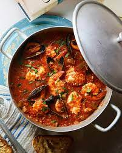

FISH STEW RECIPE

Recipe description
Ugandan fish stew is one of the finest stews,
i have ever tateste in lif. it is delicius thick andsuper yummy.
Ingredients
- Flesh or smoked fish
- clean water
- onions
- salt
- tomatoes
- greenpaper
- olive oil
- mixed spices
procedure
- chop the fish into small enough pieces
- Then cut the greenpaper, onions, tomatoes and garlic on a chopping board and put them separate
- Heat the pan for about 5 minutes, add olive oil and then drop in the onions, let them cook until gold in colur and add the garlic
- Add all other ingreadients at once plus little amount of water,
cover and leave it to cook for around 30 minuts incase using a pressure cooker
- After the stew is well cooked our stew is ready to be served
Main page